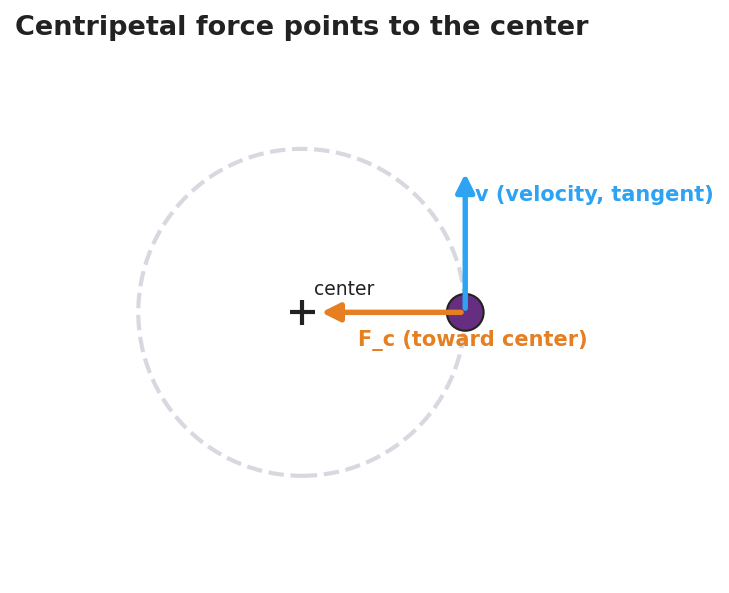

Unit: Forces — Lesson 05: Centripetal Force and Circular Motion
Phenomenon
A motorcycle leans into a curve, turning smoothly — until the tire loses grip. The instant it does, the bike does not curve harder. It shoots straight off the road. In another clip, a bucket of water is swung in a full vertical circle and the water never spills, not even at the top.
While it was turning, something kept pulling the bike into the curve. What was it — and what happened the instant it disappeared?
Driving Question
What force keeps something moving in a circle — and what happens the instant that force is gone?
Notice & Wonder
Watch the lowside crash and the swung bucket. Write two things you notice and two things you wonder. Use the word direction in at least one line.
Initial Model
Draw the bike on the curved road from above. Draw an arrow for the force that keeps it turning. Then, with a dotted line, show the path the bike takes if that force suddenly vanishes.
Investigate
A ball circles at constant speed. The blue arrow is its velocity, always pointing along the tangent (the direction it would fly if released). The red arrow is the centripetal force, always pointing inward toward the center. Use the sliders to change speed, radius, and mass — the live readout updates Fc = m·v²/r. Press Release! to let go and watch the ball leave on a tangent — not outward along the radius.
Fc = m·v²/r = 3.6 N, directed toward the center.
The velocity points along the tangent (the release direction); the centripetal force points to the center (the inward pull your hand feels):

Make It Make Sense
- A ball swings in a circle at a steady speed. A classmate says, "It's not accelerating because the speed never changes." Are they right? Explain.
- Name the real force that acts as the centripetal force in each case: (a) a car rounding a flat curve, (b) the Moon orbiting Earth, (c) water at the bottom of the swung bucket.
- You swing the stopper twice as fast at the same radius. Using Fc = m·v²/r, does the string tension stay the same, double, or quadruple? Explain.
Stuck? Sentence frame
"The ___ pulls the object toward the ___, so the object's ___ changes and it accelerates ___."
Key Vocabulary (max 3)
- centripetal force — the net inward, "center-seeking" force that keeps an object moving in a circle; always provided by a real force (tension, friction, gravity, or normal force): Fc = m·v²/r
- centripetal acceleration — the center-directed acceleration of an object in circular motion, caused by its constantly changing velocity direction: ac = v²/r
- radius — the distance from the center of the circle to the object; a smaller radius means a sharper turn and (at fixed speed) a larger required force
Revise Your Model
Return to your bike drawing. Label the inward arrow centripetal force (friction) and label the straight dotted release path tangent — inertia, no net force. Rewrite your explanation in one sentence using centripetal force and radius.
Return to the Phenomenon
Why did the motorcycle shoot straight off the road the instant the tire lost grip? Answer in one sentence: friction was the centripetal force keeping it turning; with that inward force gone, no net force changed its direction, so inertia carried it straight along the tangent.
Exit Ticket + Closing Reflection
- A 0.20 kg ball is swung in a horizontal circle of radius 0.50 m at a constant speed of 3.0 m/s.
(a) Is the ball accelerating? Explain in one sentence. (b) Calculate the centripetal force on the ball. Show the equation and units. (c) A student says a "centrifugal force" pushes the ball outward. Is the student correct? Explain. - Reflection: What is one thing today that changed how you think about turning or spinning? Who helped you see it?